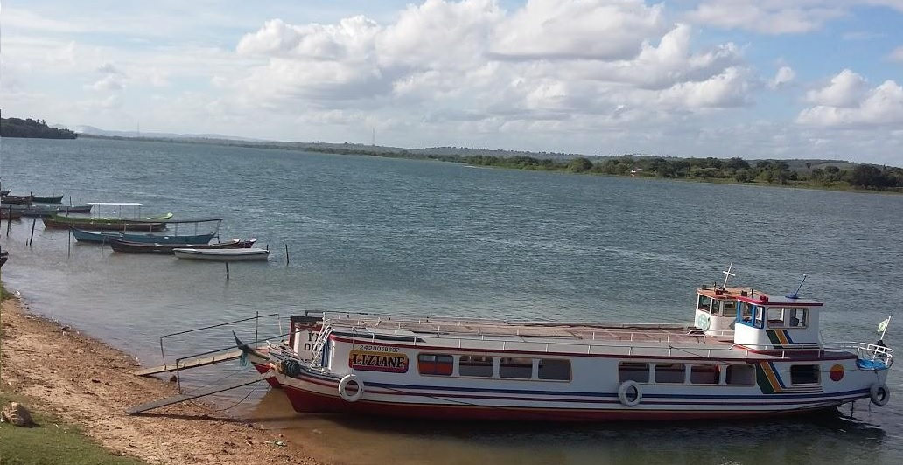

Santana do São Francisco
História
Os primeiros ocupantes da região foram os Holandeses, que vieram no final do século XVII, disfarçados de Jesuítas, em busca de ouro e de pau-brasil, permanecendo na terra até serem expulsos pelos Portugueses. Após a expulsão dos Holandeses, em meados de 1730, começaram a chegar os primeiros colonizadores da região. Não existem registros históricos do processo de evolução local até o início do século XX, quando Pedro Gomes passou a terra ao seu filho, o Capitão Belarmino Gomes da Silva Dias, fundador da Fazenda Carrapicho.
Esta fazenda consistia de vastas terras, limitadas pelo Rio São Francisco, que recebeu esta denominação pela grande concentração de vegetação, cujos pequenos frutos com espinhos ou pêlos, aderem facilmente à vestimenta do homem, nos pés descalços e ao pêlos dos animais. Posteriormente, as terras e lagoas passaram, em sucessão, aos herdeiros, que assumiram as atividades exploratórias da lavoura.
O advento da cerâmica em Carrapicho proporcionou o aumento de sua população, em decorrência de volumes de pessoas que ali buscavam a terra para morar e trabalhar, passando assim a definir o povoado. As pessoas que ali buscavam moradia, pagavam uma taxa de 3 mil réis pelo aforamento da terra, e se ocupavam dos cultivos de subsistência, principalmente com arroz e das atividades com cerâmica.
Segundo declarações de pessoas entrevistadas no local, a aquisição de moradia de grande parte da população do povoado de Carrapicho ocorria do seguinte modo: A escritura da casa era feita no Cartório de Neópolis, sendo o terreno foreiro de propriedade da família Barroso. Esta situação permanece sem alterações significativas na atualidade. Em 1977, o governo do Estado implantou a Cooperativa Artesanal de Carrapicho, visando incentivar e dinamizar a fabricação de artefatos de cerâmica. Entretanto esses objetivos não se concretizaram e a experiência cooperativista fracassou em decorrência do descrédito dos associados.
No início dos anos 80, a política nacional de incentivo ao PROALCOOL permite a implantação da destilaria Grande Vale, no Município de Neópolis. Data de 12 de maio de 1989, o anteprojeto de constituição para conclusão no capítulo das Disposições Constitucionais, criando o Município de Santana do São Francisco, com sede no povoado Carrapicho, desmembrado do Município de Neópolis, através da Lei nº 1254, de 06 de abril de 1964, publicada no Diário Oficial de 14 de abril de 1964.
fonte: https://cidades.ibge.gov.br/brasil/se/santana-do-sao-francisco/historicoPontos Turísticos
Centro Comercial de Artesanato
No Centro Comercial de Artesanato, pertinho da orla da cidade, é onde se encontra a representatividade de vários artesãos. Ônibus de turismo chegam todos os dias para trazer visitantes ávidos pela compra da cerâmica.
Prainha da Saúde
A Prainha da Saúde, que fica a 5km da sede municipal, em direção à Neópolis. A natureza se faz representar em sua magnitude na localidade. Há locais para banhos e um enfileirado de bares rústicos, que servem o camarão de água doce e outros frutos do rio como também deliciosas moquecas e peixes assados. Além disso, sombra e tranquilidade estão garantidas.
Dados Gerais de acordo com o IBGE
| Prefeito (a) | Ricardo José Roriz Silva Cruz |
| Vice-Prefeito (a) | André Giancarlo Santana |
| Site do município | https://www.santanadosaofrancisco.se.gov.br/ |
| Área territorial | 44,017 km² |
| População estimada | 7.906 pessoas |
| Densidade demográfica | 154,27 hab/km² |
| IDHM | 0,590 |
| PIB per capita | R$ 10.613,45 |